hr
Vždycky jsem chtěl procestovat Balkán. Už když jsme byli jako kluci ve škole, tak jsme koukali do cestopisných časopisů a vymýšleli, jak pojedeme do Albánie. To se teda dlouhou dobu nepodařilo realizovat, ale nakonec jsme přeci jen vyjeli a s kamarádem Jiříkem dojeli na motorkách do Sarajeva, ale ta vysněná Albánie, byla stále nepokořena.
Letos ale přišel ten správný čas na to, podniknout tenhle trip. Nejdůležitější část, vybavit hlídání pro kočky, se povedla, tak už zbývalo jen rozhodit sítě mezi kámoše, kdo by chtěl jet se mnou a pustit se do příprav věcí a auta.
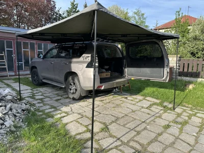
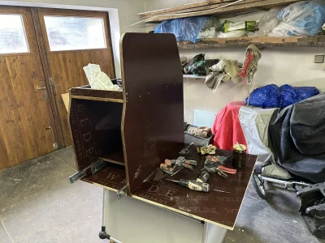
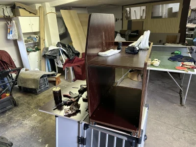
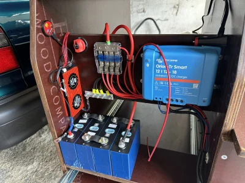
Tak co všechno asi musí být v autě na cestu? No nejdůležitější věc je asi markýza, že jo. Prostě nějaký ten úkryt proti slunci a proti dešti, bez toho to nejde. Ok, objednáno.
Co dál? Lednička. Není tak důležitá, ale je fajn, když si člověk může dát večer studený drink na pláži při západu slunce. Dobře, tak do košíku s ní.
Dál určitě voda, bez vody to nejde. Ale hodně vody. Na pití i na mytí, prostě chci mít možnost umýt si nohy od písku, nebo se opláchnout od soli, když vylezu z moře.
No počkat ale, voda na 2-3 dni pro 2-3 lidi to je minimálně 40 litrů. No to ne, to víc! To jsme měli minulý rok v Rumunsku a došlo to hned. Minimálně 80! Ale kam s tím? Voda plus nádrž, to je 100kg. To už je na střechu moc… tak ta musí do kufru… hmm… no počkat… ta velká lednička už musí mít externí baterku… ale olověnou ne, ta je moc těžká, takže lithiovou… ale ta už musí mít externí nabíječku… takže potřebuju ještě stálý rozvod s vysokým odběrem dozadu do kufru… a baterka musí mít management pro články, jinak to shoří… a taky nějaké pojistky… a jak tu vodu dostanu z nádrže? No to potřebuju i čerpadlo… Takhle nějak běželi moje myšlenkové pochody, když mi došlo, že můj low-cost jednoduchý výmysl už je plnohodnotná vestavba, která nebude ani low-cost, ani jednoduchá. Ale koupit si nějaké profi řešení za čtvrt milionu se mi nechtělo, takže jsem vzal metr, tužku, karton z krabice od mléka a začal kreslit a projektovat vestavbu vlastní.
Začal jsem opravdu dost dopředu. Markýza byla na autě už dva měsíce před odjezdem, velkou část ostatních věcí jsem měl připravenou asi měsíc předem, ale tu vestavbu jsem podcenil. Byl jsem přesvědčený, že koupím desku dřevotřísky, hrstku vrutů a za 3 dni to zbouchám v garáži s prstem v zadku. Nebylo to tak. Strávil jsem na tom skoro dva týdny od rána do večera, a posledních několik dní bylo opravdu od 8h od rána do 22h do večera, dokud bylo venku světlo. A i tak jsem nakonec vyrážel z Varů s dvoudenním zpožděním…
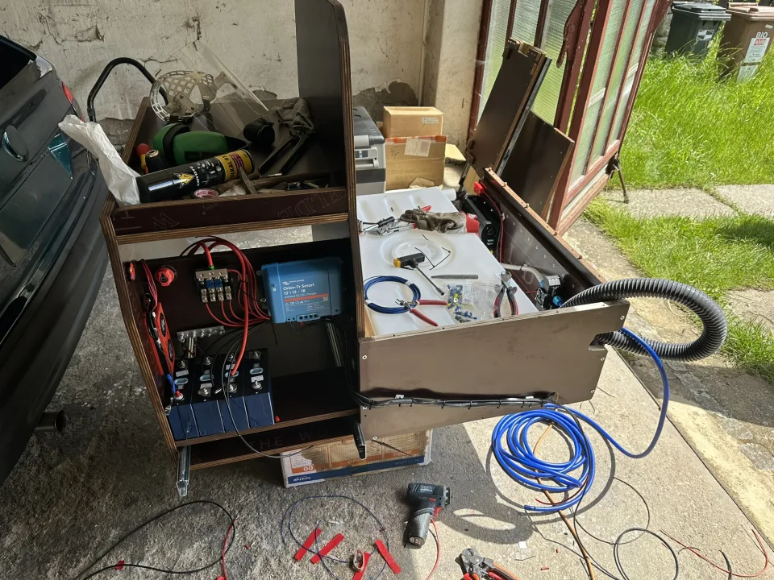
Původní plán bylo vyrazit v pátek ráno, ale podle té fotky tady, která je focena v sobotu po obědě je vidět, že to úplně neklaplo... :D
No nic, už nejde dál čekat, zbytek se holt nějak dodělá po cestě. Jiřík mi pomůže dát vestavbu do kufru, já doslova nahážu všechny věci do auta, kam to jde a asi v 16h vyrážím směr Ostrava.
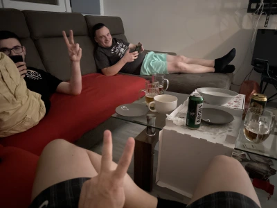
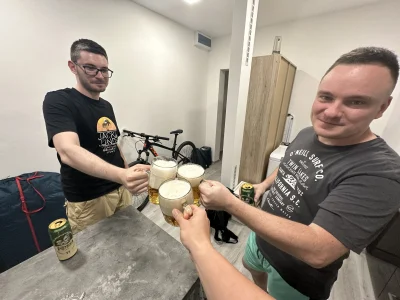
Ve Vyškově stavím opravdu na skok a nakládám Ofiho, ale do Ostravy přijíždíme stejně až kolem 21:30.
Nemá smysl už vymýšlet nějaké další plány a tak si dáváme večer jen tak na chill, s pizzou a pivkem u Donyho na gauči.
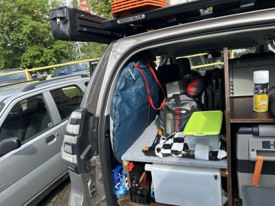
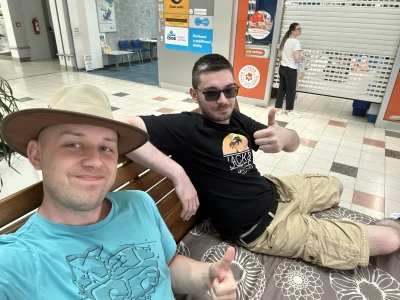
Vstáváme docela brzo, ale vyrážíme docela pozdě. Než se všichni pobalí, nají a vycrcají trvá to věčnost. Já jdu zatím dolů vyzkoušet, jestli se Donyho gigantický a super-neskladný stan vejde do auta. Je to dobré, vejde!
Musím přeskládat celé auto, protože včera jsem to tam opravdu jen tak házel na prase a neřešil nic. Teď už budeme tři a tak se to musí trochu umravnit. Povedlo se.
Tak teď už jen nakoupit jídlo a jedem! Aha, ono tam v kufru něco bouchá. Diagnostiku problém a zjištuju, že lednička nedrží v pojezdu a naráží do dveří, to se musí vyřešit.
Tak ještě jedeme do OBI, kde nakupuju dveřní háček, který na parkovišti trochu zprzním kleštěmi a hurá, zámek na pojezd je na světě a lednička už nebouchá!
Tak teď pro to jídlo... moment... máte někdo nabíječku na telefon? Ne? Já taky ne… sakra… no tak jedeme ještě do elektra pro nabíječku. A taky naftu, potřebujeme naftu, jsem úplně suchej! Long story short, jsou tři odpoledne a jsme ještě pořád v Česku. No začíná to pěkně…
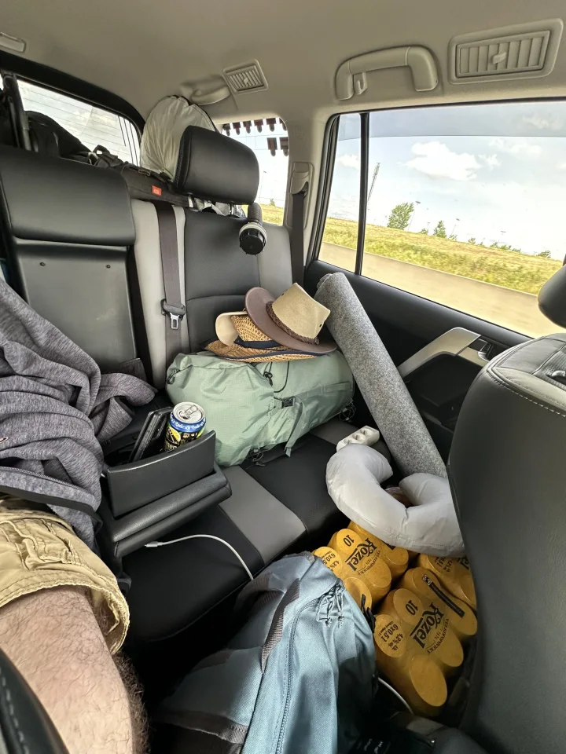
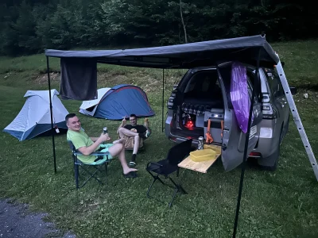
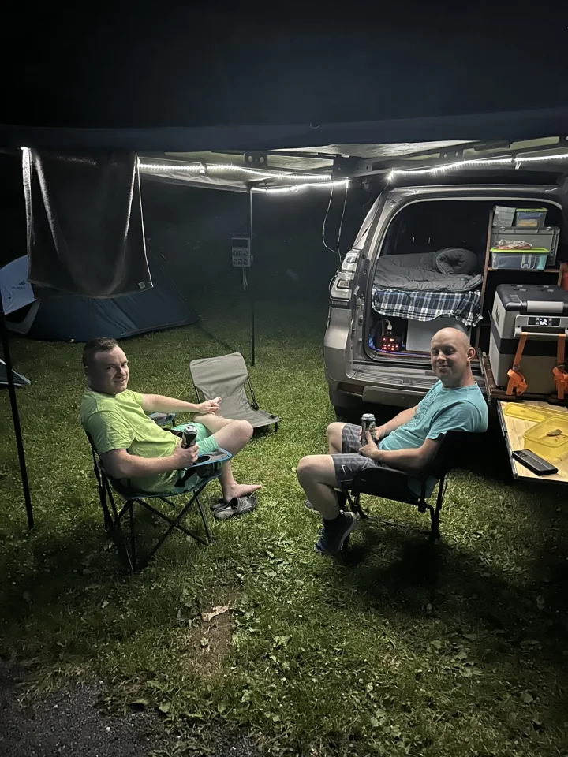
Po tom co jsme nakoupili to nejdůležitější (4 basy piva a českou puntíkatou hořčici), jsme konečně na cestě. Ofi půl hodiny brečí kvůli klimatizaci, jak je mu zima a jak na něj táhne studený vzduch zleva i zprava, ale nakonec se přikryje mikinkou a spí. Dony řídí a já se zatím stažím přes telefon nastavit nabíjení a vybíjení baterek, které jsem ještě neměl čas dodělat. To se asi po hodině trápení a několika konzultacích s Urugem povede a externí baterka pro ledničku se nám nabíjí.
Celé Rakousko a velkou Část Slovinska projedeme na jeden zátah a s výjimkou krátké zastávky na kávičku u benzínky jedeme až do kempu.
V kempu musím vyřešit ještě jeden drobný problém a to, že nemám kde spát. Respektive můj plán celou dobu bylo spát v autě, měl jsem to teoreticky vymyšlené a částečně připravené, ale dodělat jsem to prostě nestihl. Takže měřím desky, lepím na ně koberec, šroubuju šroubky a snažím se to nějak vymyslet, abych měl alespoň trochu rovinu na spaní, což se nakonec tak nějak částečně povede.
Nedá se usnou. Už hodinu se převaluju, je mi strašný vedro a nemůžu dýchat. Zapomněl jsem si otevřít okna a je tu jako v pekle. Satan by sem mohl klidně jezdit v zimě na dovolenou. Snažím se to zaspat, ale to se fakt nedá. No nic, musím otevřít dveře a trochu vyvětrat. Až sem nic zajímavého, JENŽE jsem se pro lepší pocit zamknul, takže jak otevřu dveře, tak se splaší alarm a začne o půlnoci houkat na celý kemp. Než v panice vyhrabu klíče od auta, abych to vypnul, tak to tam řve minimálně minutu. No nic, ostuda, příště už budu vědět…
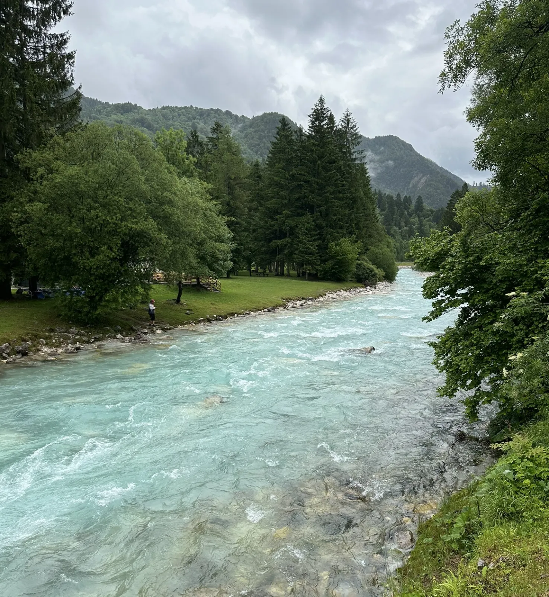
Nespalo se mi vůbec dobře. Nesedí mi “v posteli” úrovně a mám hlavu z kopce. Snažil jsem se to podložit dekou, ale je to málo a musím to nějak vyřešit.
Vstáváme a prší, počasí nic moc. Spíš nic než moc. Pohledám v mapě v aplikaci “WikiLoc” a nacházím offroadovou trasu “Dovje-Golica-Jesenice” kousek od nás. Prý střední obtížnost a 4x4 only. Fotky vypadají naprosto famózně, tak to jedeme zkusit. Po cestě stavíme na vyhlídce u řeky. Krásná a průzračná voda, nebýt zima a déšť, jdu se okoupat.
Offroadová trasa byla nakonec fakt hustá a úplně skvělá. Byly to povětšinou normální cesty, ale opravdu tak strmé výjezdy, že nebylo vidět nic než nebe a jelo se čistě jen podle přední kamery. Zpestřením cesty byl pak strom na cestě, se kterým jsme si se sekerou poradili jako nic :) Na vrcholu bohužel úplně zamračeno a déšť, takže fotky nejsou žádné. A nutno také podotknout, že veliký červený prapor s nápisem "Bik na paše" v nás uplně nevzbudil důvěru jít to prozkoumat z blízka.
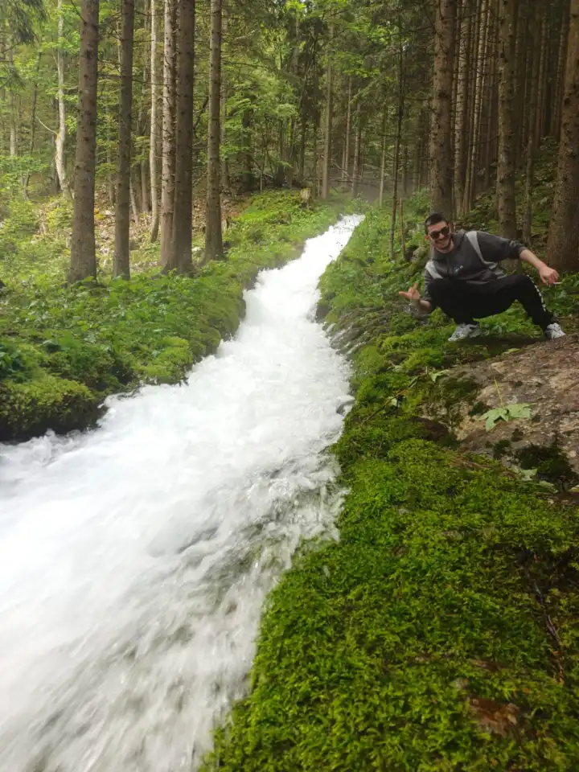
Po cestě dolů jsme pak narazili na zajímavou umělou řeku, která (pravděpodobně) sbírá horskou vodu a slouží jako nátok pro elektrárnu.
Tahle trasa byla úplně na severu Slovinska, odkud přejíždíme do dalšího kempu u “Soteska Pekel”. Je to ale dlouhá cesta, takže dojíždíme až skoro za tmy. Jak by řekl Ronny Dahl (poměrně slavný Australský cestovatel): “yet again in darkness we find a camp”, ve volném překladu něco jako “a opět jsme kempovali za tmy”, což nás bude úspěšně provázet celou dovolenou. Po cestě jsem ve Slovinském Hornbachu koupil dřevěný trámek a hrstku šroubků a s Ofiho pomocí vyrábím podložku pod mé spací desky, takže dá-li bůh, dneska už budu mít postýlku krásně v rovině. Jdeme si sednout pod přístřešek do “jídelny” a vytahujeme z auta kapku proti smutku v podání Jacka a koly. Hezky debatujeme a rozjímáme o životě, ale jsem docela unavený a po druhém drinku nechávám zanechávám kluky osudu a jdu spát.
Ráno se budíme do vydatného deště. Ne, opravdu to není pár kapek, ale regulérní slejvák. Dám si sprchu a jdu si udělat snídani. V celém kempu jsem uplně sám. Zbyli tu jen dva rakušáci v karavanu a kluci ve stanech co ještě spí a když vidím co po nic zůstalo na stole, je mi jasné proč ještě spí, a taky že ještě dlouho spát budou. Stáhnuli ve dvou litr Jacka a litr Ginu. Prasata!
Teprve když vstanou dozvídám se, že to byla celkem divoká párty, až jim přišla babča Rakušanka ve 2 ráno vyhubovat, že dělají bordel a řvou na celý kemp. Jsem docela rád, že jsem se tohohle zvěrstva neúčastnil a jsem pěkně dorůžova vyspinkán.
Zabalíme auto, koukneme na předpověď a vyrážíme rovnou cestou tam kde je "teplo a neprší" a to je v Chorvatsku.
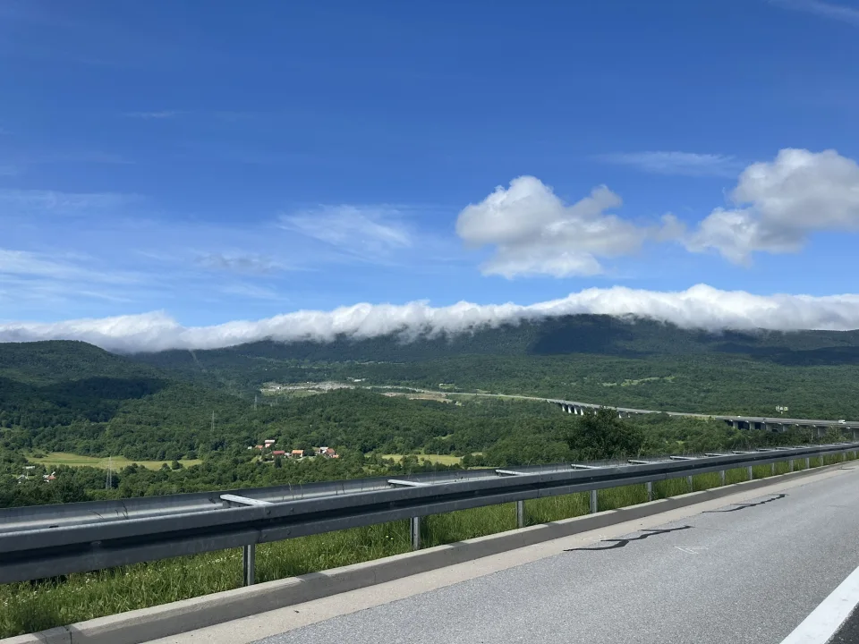
Cesta docela pěkně utíká a dokonce konečně vidíme i nějaké ty sluneční paprsky. Modrá obloha kolem silnice v nás vyvolává opravdovou euforii.
Abychom si užili trochu off-roadu vybral jsem trasu skrze takzvaný TET, což znamená Trans Euro Trail. Jsou to cesty, které používají motorkáři mimo silnice a vedou přes vesničky, uzoučké uličky, pole, lesy, a prostě obecně mimo civilizaci. Uhýbáme z hlavní trasy na menší silnici, a zase menší, a ještě menší a končí asfalt a je to konečně tady, vjíždíme na území nikoho. Hned po prvních kilometrech potkáváme strom přes cestu, ale s tím už máme zkušenosti, takže ho hravě překonáme a jedem dál.
Jedem lesem hodinku, dvě, tři a začíná mě chytat docela značný pocit zklamání. Ne jen mě, rozladění jsou všichni. TET je možná super na motorce, kde člověk může topit, svištět s větrem o závod a užívat si jízdu, ale s naloženým autem se drncat 20km/h přes šutry a díry v hustém lese, kde není vidět vůbec nic, je docela opruz. Navíc je tu venku tolik havěti, že se neodvažujeme otevřít okna a s klimatizací přes okýnko koukáme celý den na stromy. Z celé 7-mi hodinové cesty mám jen jednu jedinou fotku a tou je značka “Pozor miny”, což byla opravdu jediná zajímavost co stála za vyfocení.
Lesem jsme se propletli ještě hlouběji do vnitrozemí, kde není vůbec nic. A navíc už je pozdě, tak hledáme místo na spaní. Našli jsme pár pěkných plácků, ale kluci jsou měkký a pořád se jim něco nelíbí, takže to nakonec vzdávám a zmáčený od jejich slz jedu do kempu “Zelena dolina”. Za kemp platíme 45€ z čehož mám pro změnu slzičky já, protože dát 15€ za to, že se můžu vyspat v autě na trávníku je prostě smutek.
Naštěstí majitel, postarší dědula, hned přispěchá s panákem slivovice a povídá si s námi. Je příjemný a kamarádský, což alespoň částečně kompenzuje můj brekot.
Chceme začít stavět stany a rozbalit kemp, ale narážíme na první závažný problém expedice - nejde nám otevřít rakev na střeše. Trápíme se tam s tím minimálně 15 minut, ale zámek je zaseklý a ani se nehne. Docela prekérní situace, v rakvi jsou totiž stany a spacáky, takže se to musí otevřít, jinak kluci nemají kde spát. Volám kamarádovi, odborníkovi na rakve, jestli náhodou neví co s tím. Barvitě mu vylíčím celý problém a on naši situaci shrne do jedné povzbudivé věty “no tak to jste v píči kámo”. Děkuju, pomohlo.
Ale abych mu úplně nekřivdil, říká mi, že ty zámky se vyklápějí dovnitř a že za nimi musí něco být a proto to nejde zmáčknout. Já jsem celou dobu myslel, že zámek se rozbil a nejde zmáčknout, protože je zamčený, tohle je úplně nový pohled na problém. Začíná se stmívat a došel čas na mírové řešení. Beru sekeru a dřevěný trámek, několikrát do zámku bacíme, cvak a je otevřeno. Konečně. Narvali jsme do té rakve moc věcí, ty se po cestě sesypali a "ucpali" to místo, kde se hýbe zámek. Takže nakonec všechno dobře dopadlo a ani rakev nebyla zraněna. Stavíme stany a jdeme řešit večeři.
V kempu je gril, máme hlad, máme maso, nemáme dřevo. Jdu se teda dědka optat, jestli si můžu za plotem nasekat nějaké větvě, ale on mi říká, že to bude mokré a že to zařídí. A opravdu, za chvíli nám nese přepravku polínek a v kombinaci s jeho kořalkou, studeným pivem, grilovanou panenkou a velkou porcí oliv, přestávám být tolik otrávený z těch patnácti eur.
V noci mě (pro změnu) vzbudí mega-bouřka. Potřebuji na záchod a tak musím vylézt ze svého Toyota hotelu a venku to teda není nic moc. Alespoň vylévám markýzu a povoluji lana, aby se v ní nedělali takové lavory. Úplně mokrý se sunu zpátky do pelíšku a jsem opravdu rád, že nemám stan.
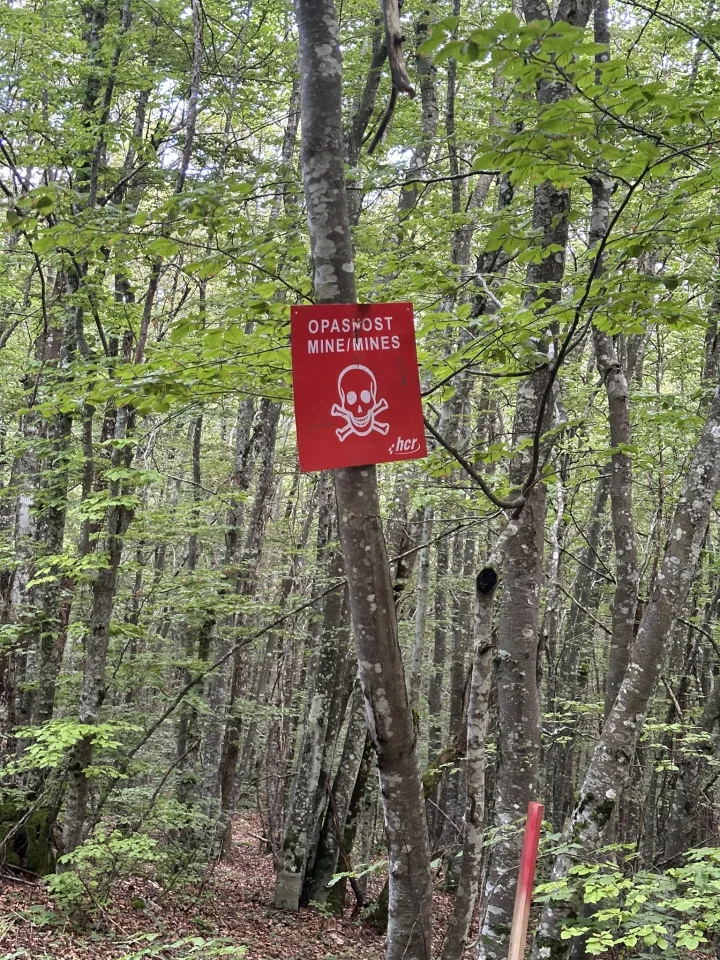
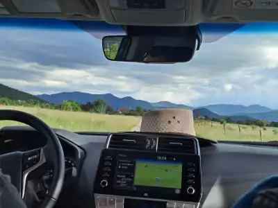
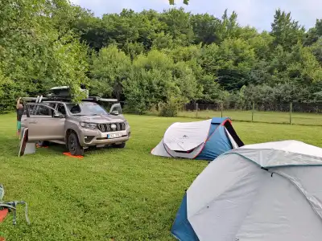
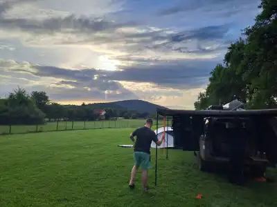
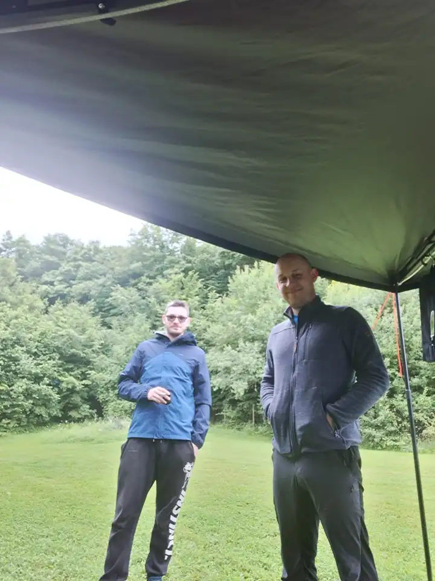
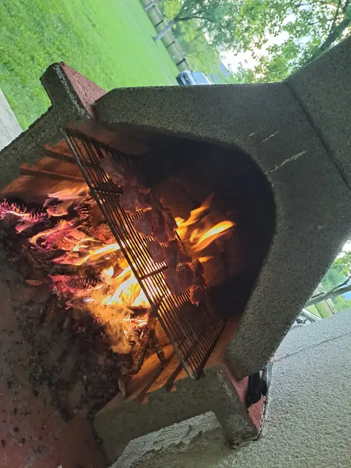
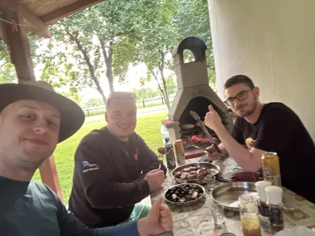
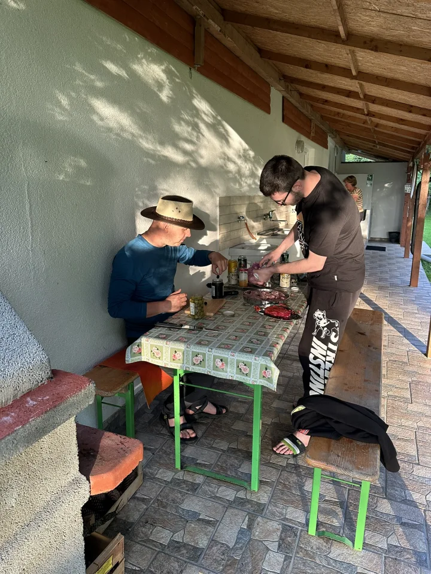
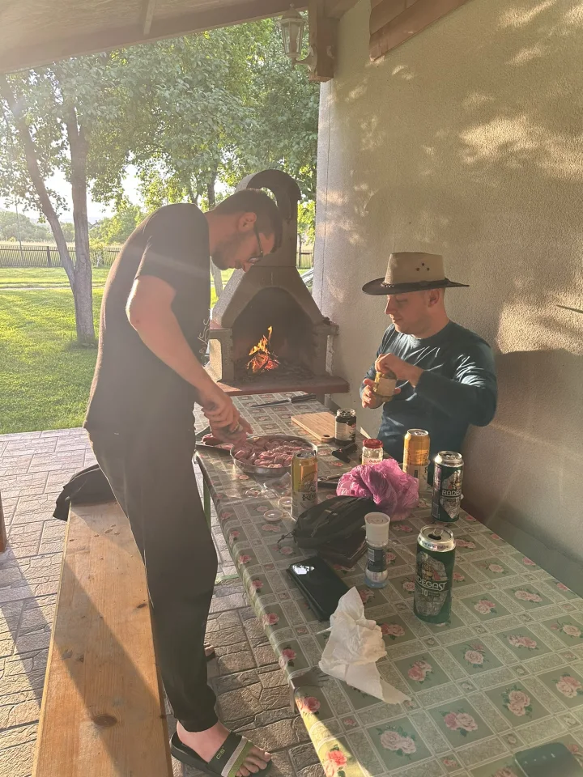
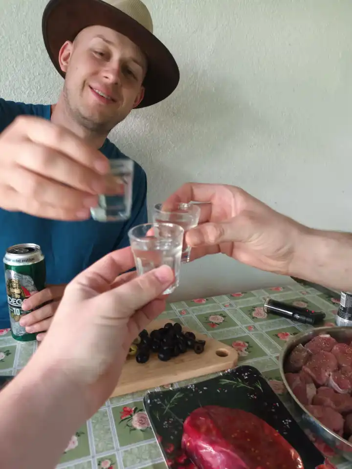
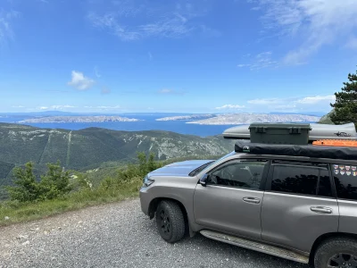
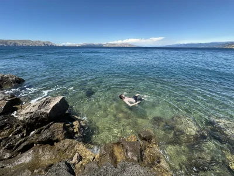
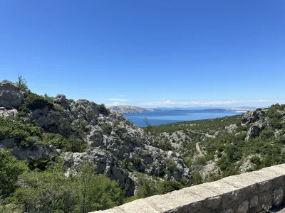
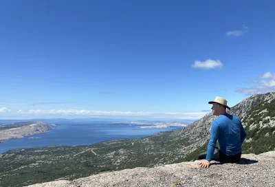
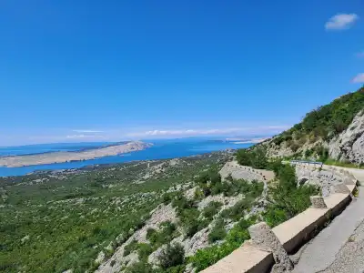
Ráno vstáváme a naštěstí už neprší, ale rozhodně není pěkně a opět balíme mokré stany. Já jsem v pohodě, kluci jsou celkem v pohodě, ale Španělská rodinka, co měla stan o kus vedle, už je na tom hůř. Měli takové to klasické staré komunistické Áčko, takže sedí na lavičce v kempu, děcka zabalený v osuškách a komplet všechny jejich věci, včetně spacáků, ponožek a kalhotek, jsou rozvěšené na každé volné šňůrce po celém kempu. No nechtěl bych, další bodíky pro hotel Toyota.
Dneska už žádné experimenty a jedem na jistotu na parádní trať kterou jsme našli ve WikiLoc. To že ta trať zase tak parádní není a že se budeme celý den zase drncat lesem, jsme zjistili až pak, ale minimálně začátek a konec byl super.
Počasí nic moc, zataženo, černo, občas spadne pár kapek a nemůže se to rozmyslet, jestli teda bude pršet nebo ne. Jak přejedeme poslední hřeben hory k moři, tak jsme úplně jak ve snu. Slunce! Konečně! Mraky se o ty hory zastavily a za hřebenem je úplně jiný svět. Pěkně, teplo, no prostě paráda. Stavíme na fotky a pár videí, protože takový přechod oblohy z černé na modrou jsem ještě asi neviděl a jedeme se ohřát. Nahoře 12 stupňů, dole u vody 25.
Hned jak se silnice spojí s mořem, tak stavíme a jdeme do vody. Oficiálně první koupačka dovolené.
Po osvěžení se vydáme zase na cestu a ten začátek, kde cesta stoupá serpentýnou do hor je opravdu úchvatný. Děláme blbosti, jezdíme na střeše, fotíme, točíme a užíváme si to, co to jen jde.
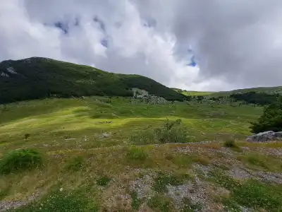
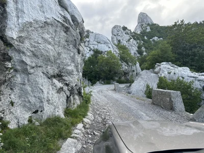
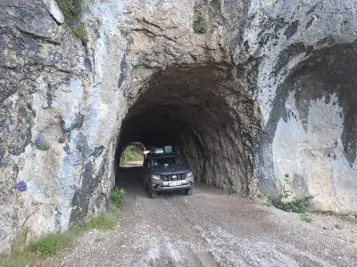
Jak se přejelo do vnitrozemí, tak jsme se bohužel zase vrátili zpět na tu stranu hor, kde bylo zataženo a ošklivě. Ale ono to je jedno, protože jsme zase strávili velkou část dne v lese, kde nebylo vidět nic, než šutry a stromy.
Asi v půli cesty potkáváme motorkáře na Tenerkách. Tak se s nimi dávám do řeči a oni, že jedou nějaké jakoby rallye, a že mají za úkol, krom objetí orientačních bodů ještě sehnat cizí měnu. Dáváme jim asi 30 korun v drobných, z čehož jsou úplně meganadšení, děkují, sedají na mašiny a rychle mizí pryč. Teprve v autě mi dochází, že to vlastně měli docela štěstí, protože velká část zemí okolo už má Euro.
Po další hodince drncání dojíždíme na konec úseku, který byl pěkný. Ale nenechte se namlsat jako my - jedná se fakt asi o 500m, kde je ten průjezd mezi skalami a tunel co je na fotkách, jinak nic.
Už je docela pozdě a hledáme místo na spaní, ale není tu nic. Všude skály, křoví, opravdu ani jeden rozumný plácek. Pořád jedeme níž a níž a pořád nic. Nakonec teda kouknu do mapy na nějaký kemp, ale ten tu také není, jen na druhé straně ostrova. Ale to je buď Jadrolinkou (která jezdí jednou za hodinu) přes moře, a nebo 80km okolo. Ani jedna varianta se nám nelíbí. V jedné aplikaci vidím místo v horách, kde prý někdo nedávno spal a bylo to “ok”. Vydáváme se tam a není to ok, je to max 3/10. Bodláky, šutry, kravince, bordel. Nakonec teda najdeme kousek rovnější země a zvažujeme, že začneme stavět stany. Doslova minutu na to jede okolo auto, stavím ho a ptám se, ze slušnosti, jestli tu můžeme přespat. V autě sedí dvě ženské, jedna dělá, že tam vůbec není a dívá bokem. Ta druhá krčí rameny, že vůbec neví, že se musí optat manžela. Za 15minut přijde a říká, že teda jako můžeme, ale že to tam je nebezpečný, a jsou tam divoký psy, a je to jejich pastva pro krávy, a fouká velký vítr, a bude pršet, a taky že mají velké krávy, obrovské, a ty by nás mohli pošlapat, a taky bude pršet že jo, a jsou tam ti psy… Aha, ten písek s kamením, na kterým rostou 4 bodláky jsou pastva. Ale chápu, prostě nás tam nechtějí, tak sedáme do auta a jedeme pryč.
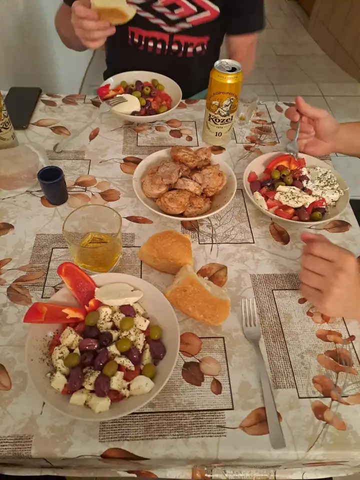
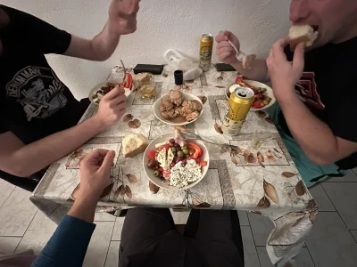
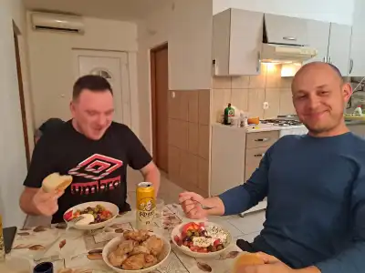
Už je opravdu pozdě, skoro tma, hřmí, a tak kemp vzdáváme a jdeme hledat jakékoliv ubytování. Snažíme se něco najít přes Booking, ale není to tak jednoduché, jak se zdá. Buď drahé, nebo plné. Takže nakonec prostě objíždíme podle mapy apartmány.
Na jednom baráku telefonní číslo, tak tam volám. Máte místo? Máte, super, bereme.
“Kolik?” ptám se.
“45” říká Chorvat.
“To je moc, dám maximálně 40.”
“OK!” Naprosto bez zamyšlení vypálí Chorvat a mě je jasné, že jsem přeplatil, ale už se s tím nedá nic dělat.
Jak se nastěhujeme, tak vevnitř na stolku je papír, kde je heslo na wifi a ceník s cenou 10€ osoba/noc. No jo no, moje chyba, měl jsem začít níž.
Zatímco připravuji večeři, tak venku začíná fakt bouřka, a jsme docela rádi, že jsme to místo venku nevzali a nespíme ve stanu. A nakonec 40€ za apartmán je pořád lepší jak 45€ za trávu v kempu.
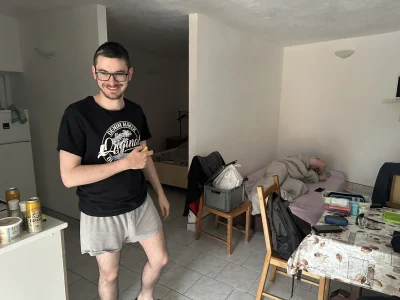
Ráno se budím první a přemýšlím co dál. Už je pátý den za dva dny musíme nabrat Nováska v Dubrovníku, což je úplně na jihu, a pak už pojedeme dolu, takže jesli chceme Bosnu, tak jí musíme stihnout teď. A my rozhodně chceme Bosnu, takže je rozhodnuto.
Já a Dony snídáme a Ofík začíná jeho den pěti cigaretkama a kafem, jako obvykle. Šestou už si nedá, už je najedený dost a tak vyrážíme na cestu.
Jako první destinaci vybírám vrcholek hory Pločno, 2228 mnm. Po cestě nám pořád ještě místy prší, ale nenecháme si tím zkazit náladu.
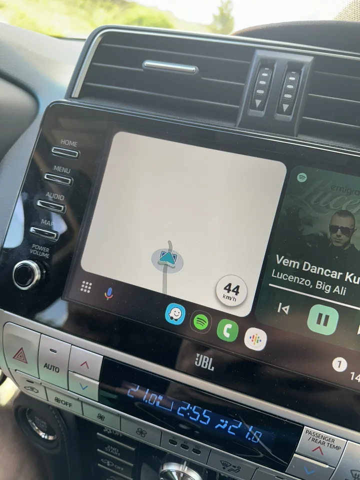
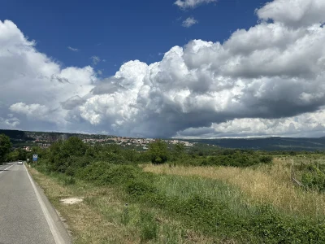
Příjezd do Bosny vypadá takhle. Krásně, sluníčko, a Toyota navigace je přesvědčená o tom, že tady už je konec světa a padá se tu přes okraj dolů.
Hned v prvním městě za hranicemi nás staví místní ochránci zákona. Řídí Dony, policajtka chce řidičák a občanku, kterou má v peněžence někde v batohu, tak jde dozadu hrabat do kufru. Sotva Dony vystoupí, tak se s ní z místa spolujezdce dávám do řeči, že jsme na dovolené a že jedeme z Chorvatska a že jsme se těšili do Bosny, protože Bosna je "the best". Ona se podívá do auta, usměje se, řekne “have a nice day” a odejde. Minutu na to přijde Dony z kufru s řidičákem v ruce. "Co je?" ptá se. "Nic, vyřešeno, jedem." odpovídám. Takže jedeme dál a smějeme se tomu, že na celou silniční kontrolu stačil úsměv a zpocené tričko.
Jedeme tankovat. Nafta za 23 korun je příjemná, ale originál Magnum na benzínce za euro mě opravdu dostává. Miluju Bosnu.
Dále po cestě ještě odbočíme na vyhlídku, ale než tam stihneme dojet, začíná strašně pršet. Než se otočíme (musím vylézt ven, abych koukl jestli můžeme couvat mezi kameny), tak jsem úplně durch.
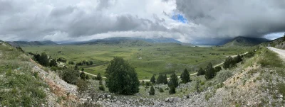
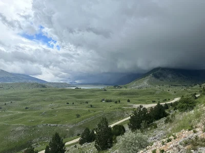
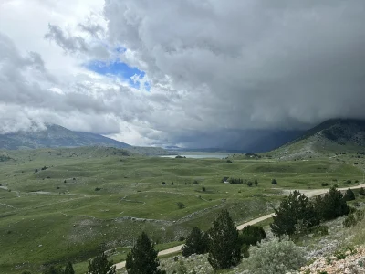
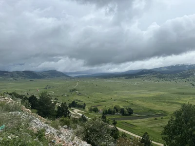
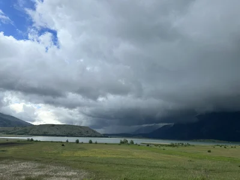
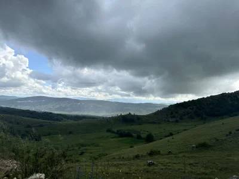
Jedeme rovnou cestou až pod Pločno a fotíme si jezero.
Je tu fakt pěkně! Mam radost a těším se nahoru.
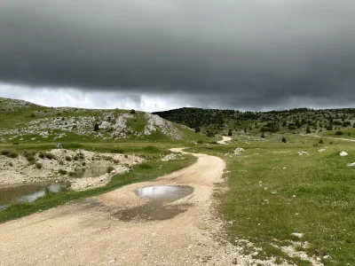
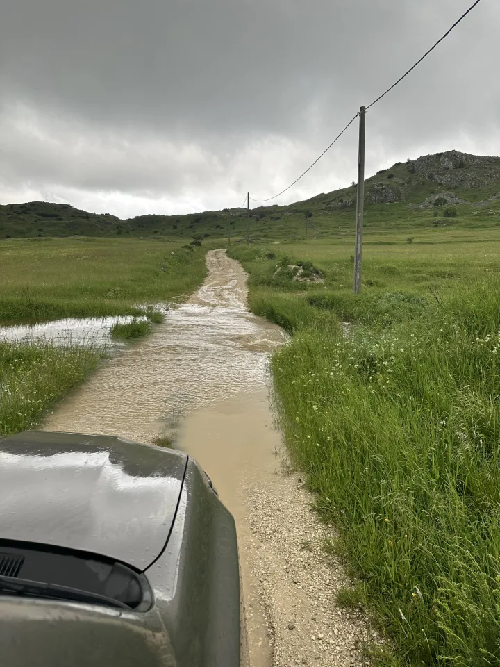
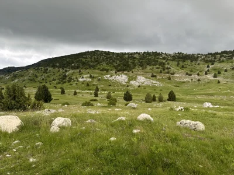
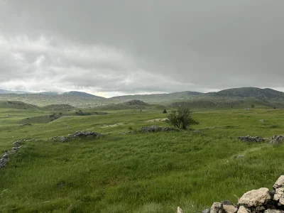
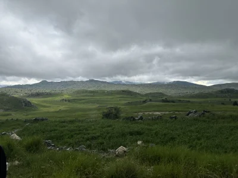
Začátek cesty je fenomenální. Uzoučká cestička přes obrovskou zelenou planinu mezi horami. No paráda, vážně.
Po nějaké době přijíždíme k zaplavenému a napůl spadlému mostu. Z té fotky to není až tak vidět, ale v reálu se mi to vážně moc nezdá. Představa, že ten kus panelu co tam zbyl pod námi praskne a já tam utopím auto v řece vůbec není zážitel, co bych chtěl získat.
Posílám Donyho na průzkum, ten to projde a je vidět, že na mostě je asi 15cm vody, proud není velký a zbytek panelu je prý docela široký.
Zpět se mi nechce, tak to riskneme. A vyjde to!
Cesta nahoru je opravdu offroad. Zezačátku je to taková polňačka, ale čím se dostáváme výš, tím je to drsnější a drsnější. Šutry, koryta od vody, a další šutry a další koryta.
Redukce, jednička, průměr 6km/h a 40 litrů nafty na sto km.
Po 3 hodínách se vyškrabeme až nahoru a nálada v autě by se nejlépe dala vystihnout slovem “nedobrá”. Jsme přímo v mrakách. Venku je 6 stupňů, déšť, vítr, no asi jako ve dvou tisících na horách. Ten kdo to zažil, ví přesně co “vysokohorské počasí” znamená.
Sedíme v autě, koukáme snad 20 minut přes okno ven a nikomu se tam nechce, ale zároveň nikdo nechce být ten, kdo první řekne jak moc je to na hovno.
Nakonec vylezeme z auta a jdeme obhlídnout terén. Naštěstí ale po chvíli přestává pršet a vítr rozfoukává mraky. Obloha! Slunce! To dáme!
O kousek níž je horská chata, která je odemčená a nacházíme v ní útočiště. Jsou v ní palandy, kamna, a dokonce i dřevo na zátop. Je to dost zatuchlá a špinavá zewl-bouda, ale i tak nám přijde sakra vhod a jsme rádi, že se tam můžeme zašít.
Na kamnech pečeme maso, k tomu si dáme drinčík v podání rum+kola+limetka a je nám krásně.
Štěstíčko nám šlo naproti a ráno je naprosto famózní.
Beru lopatu a jdu kakat do sněhu. Fouká mi na pytlík a mrznou mi nohy v pantoflích, ale musím říct, že takový výhled jsem u kakání asi ještě neměl.
Je tu spousta fotek a videí, které jsou stejné, nebo dost podobné, omlouvám se za to, ale bylo tam tak krásně, že bylo těžké je sem nedat. No posuďte sami. Sice tři hodiny cesta nahoru, ale určitě to stálo za to. Nebo asi taky záleží, koho se zeptáte.
Se vší skromností si myslím, že už jsem zkušený cestovatel. Vím, že jsou v Bosně vysoké hory, a že ve dvou tisících bude pravděpodobně zima i uprostřed léta, takže jsem byl vybavený. Měl jsem spacák, extra deku na spaní, termo-prádlo na spaní, merino kuklu na spaní, zimní bundu, čepici, rukavice, no prostě všechno. Už jsem pár takových nocí ve stanu zažil a vím, jak umí clověk nad ránem vymrznout. Takže já jsem se zachumlal a spalo se mi nádherně.
Naopak Ofi si tu noc na Pločně až tolik neužil. Nejen, že jeho zimní výbava čítala tepláky, mikinku a bílé skejťácké polobotky s velkým jazykem, ale ještě k tomu měl spacák do +13ti. Ano, to není dobré. Ale aby toho nebylo málo, tak se mu navíc ještě povedlo si v noci o kámen propíchnout matraci :D
Takže tepláčky, bílé polobotky, mikča, spacák do +13ti a nocleh bez matrace rovnou na šutrech. Čekal jsem, že přijde v noci škemrat, aby se mohl vyspat se mnou v autě, ale on ty 2 stupně co v noci byly statečně přetrpěl venku. Všechna čest Ofíku, já bych to nedal.
Cestou dolu jsme si s Donym užívali zase úplně jiné krajinky a výhledy, a Ofi v teple v autě dospával to, co v noci nezvládnul.
Plán na dnešek byl jasný, musíme opravit Ofiho matraci, nebo případně koupit novou. To je priorita číslo jedna a to se musí dneska vyřešit.
Z Pločna sjedeme dolů do údolí a v prvním vesničce kterou potkáme hledám někoho, koho bych se zeptal, na nějaký obchod s lepením na duše. Vesnička je ale poměrně malá a pustá, nikde nikdo.
“Hele člověk”, hlásí Dony. Hned brzdím u jeho baráku a vystupujeme. "Helou frend", začínám konverzaci, ale stejně tak jsou mu mohl říct, že tučňáci těžko přeperou líné vrány, protože se ukazuje, že týpeček neumí anglicky ani slovo. Kluci se vrhnout na dofukování gum, které jsou ještě z Pločna asi na 1,6 baru a já automaticky vyndávám z ledničky jedno studené pivo a podávám ho týpkovi na přivítanou.
Přes překladač v telefonu se mu snažím vysvětlit jaký máme problémm a že potřebujeme lepení na duši. On mi odpovídá, že jeho švagr má autoservis, a že nám kolo určitě opraví. Já říkám ne kolo, ale postel potřebujeme opravit. To je prý jedno, švagr je fachman, ten opraví všechno. Kluky posadí na terasu, uvaří jim dvě kafe, skočí ke mě do auta a jedeme na druhou stranu vesnice ke švagrovi do autoservisu.
Co se dělo dál jsem nečekal. Všichni lidi z okolí se seběhnou, aby se mohli podílet na lepení naší matrace. Tři jí drží, další na ní stříká vodu, další hledá díru. Já jen stojím s rukama v kapsách opodál a fotím.
Do toho přijde další člověk a podává mi telefon se slovy, že jeho známý z Mostaru umí slovensky, a že si rozhodně musíme popovídat. Tak mu vyprávím co se stalo a jak si Ofi propíchl matraci na Pločně a teď to lepíme. Dobrý, pokecáme, zasmějeme se. Chlapci mezitím našli díru v matraci a lepí na ní záplatu. Musíme počkat 15 minut, než zaschne lepidlo, tak v mezidobě konverzuju s každým, kdo alespoň trochu mluví anglicky.
Hotovo. Nemam ani Bosenské marky, ani Eura, tak se je snažím vyplatit pivem, ale nechtějí nic. Tak si alespoň uděláme pár fotek, podáme ruce a jedeme zpět.
Vyzvednu kluky, vyměníme si kontakty a rozloučíme se. Kafe samozřejmě dostaneme zadarmo a teprve když odjedeme, tak se ukáže, že ten týpek, který to celé zařídil, má doma kavárnu ze které bez mrknutí oka vyhodil člověka co tam seděl, zamknul dveře a jel se mnou řešit matraci.
Dál jedeme do Mostaru, ze kterého nemám doslova ani jednu fotku. Je to jako staré město v Praze - krámky s cetkama a scam. Kupuju si velký kopeček pistáciové zmrzky za 1€ (což je asi 3x míň než u nás?), přejdeme bílý most tam a zpět a jedem pryč. (scam = podvod, či obchod s úmyslem odrbat zákazníka)
Ofimu sestřenka doporučila výlet do nějakého chrámu mnichů ve skále, ten nám o tom básnil tři dny, jak to bude super, tak se tam jedeme podívat. Je to asi dvě hodiny cesty a už když platíme vstupné v Eurech, tak vím, že to bude problém, protože jakmile tam berou eura, tak je to turistická zóna, a je to scam. Takže za 5€ jsme se podívali na 3 místnosti s ošlapaným kobercem, jako má děda v obýváku a za 10 minut jsme venku. Paráda, to jsem vždycky chtěl.
Ale na druhé straně řeky mají loďku, kterou vás vezmou do jeskyně, kde pramení řeka. No alespoň něco.
Obejdeme to na druhou stranu k loďce a platíme další 2,5€ na osobu. Hned jak vplavme do jeskyně, tak zjišťujeme, že celá ta jeskyně je prostě smradlavá díra asi 10 metrů v průměru, kde mají holuby hnízdo. Voda pramení někde pod námi, takže není vidět o nic víc, než ze břehu.
10 minut tam čumíme na holuby a plaveme zase těch 20 metrů ven. Paráda krát dva. Jsme zklamaní.
Jejich historický záchod byla prostě díra mezi cihlami do řeky a slavné vykopávky byla hrst střepů ve vitríně. Takže ponaučení je - jakmile tam mají ceny v eurech, je to scam a rychle pryč. Tyhle dvě pěkné fotky, jsou focené normálně z venku, a platit si cokoliv bylo úplně zbytečné.
Jediné pozitivum téhle návštěvy bylo, že na výletě do smradlavé jeskyně potkáváme Českou rodinku, která nám sděluje, že přijeli ze Sarajeva a dávají nám typ na dobré místo na kemp přímo v Sarajevu. Takže jsme si vlastně za zmíněných 25€ koupili radu, kde se vyspat. Tak tedy jedeme.
Cesta je dlouhá, utíká pomalu a na místo dojíždíme opravdu až v za tmy, takže “yet again, in darkness we find a camp”. Ale přes to všechno se nám ještě povedlo na kusu mokré větve utržené z místního keříku opéct (nebo teda spíš mírně ohřát) maso k večeři a nejdeme spát hladoví.
Teprve až ráno za světla jsme dokázali plně ocenit malebný výhlede na dráty a sloupy vysokého napětí, které jsme měli přímo na hlavou. Takhle blízko jsem ještě nikdy nebyl, úplně je slyšet, jak to bzučí a praská. Nicméně to místo bylo opravdu pěkné - přímo na kraji hlavního města a přitom naprosté soukromí, travička a keříky.
Vstávali jsme brzo, udělali si kafíčko a Ofimu se dokonce povedlo dosušit matraci, která byla ještě navlhlá ze včerejšího lepení. Škoda, že jsme tu jen na jednu noc a nestihneme Sarajevo, ale večer už musíme být v Dubrovníku a vyzvednut Nováska.
Po snídani, u které jsem se naučil, že ouško plechového hrníčku, který se hřeje na plynovém vařiči dokáže být opravdu horké (po tom co jsem si tvar jeho ouška vypálil do prstů), jsme vyrazili obhlédnout ruiny olympijských staveb z roku 1984.
Mapy.cz nám spočítali prima krátkou trasu přes hory, na které se ukazuje pravidlo, že to, že na mapě je tlustá žlutá čára rozhodně neznamená, že tam je asfalt.
Jako první nás čekají zbytky ze skokanského můstku. Když jsme tu byli s Jiříkem před lety, tak jsme byli dole, ale nahoru se nám nechtělo. Tentokrát jsem ale stejnou chybu neudělal a vyšel jsem si to poctivě až úplně nahoru. Bez přehánění musím říct, že ten kdo se dobrovolně nahoře postaví na lyže a pustí to šusem dolu je blázen, co nemá rád život. I z těch fotek je vidět, že to je krpál jak prase a v reálu je to ještě 4x horší.
Další pak byl olympijský hotel, který je krom běžného chátrání ještě navíc dost zasažený válkou. Je to zajímavé a hrozivé zároveň…
Dámy a páni je to tu, zlatý hřeb Bosny přichází a jedeme nahoru na Bjelašnici.
Z té cesty, přírody a výhledů mám kalhotky mokré víc, jak šestnáctiletá holka co kouká poprvé na Twilight. Teče mi to po stehnech, musel jsi si dát osušku na sedačku, ale ani to nestačí a po chvíli už to musíme vylévat hrníčkama z oken.
Ne, opravdu, štěstíčko nám přeje a máme opravdu luxusní počasí. Pořád jsou to dvoutisícové hory, a modrá obloha bez mráčku a 12 stupňů je počasí, které je tam pár dní v roce. Mám z toho asi sto padesát tisíc fotek, ale pokusím se vybrat jen pár nejlepších.
Nahoře na hoře potkáváme české motorkáře, tak se jdu družit. Týpci už jsou na cestě domů a dávají nám tip na offroad do Černé hory, který ale nakonec nejedeme, protože prostě není čas.
Když už se balíme do auta že pojedeme do Dubrovníku, potkáváme chlapa v typickém americkém Jeepu, včetně vlaječek a značky z Miami. Jdu si samozřejmě hned povídat, ale dozvídám se, že to není Američan, ale místňák z Bosny na dovolené, co objíždí pěkná místa. Říká, že už tady na Bjelašnici byl vícekrát, ale takové počasí co je dnes tady ještě nikdy nezažil. Chvilku drbeme o všem možném a doporučuje nám, že se máme jet podívat do vesničky Lukomír, která je hned vedle. Je to jen 12km, ještě jsem tam nebyl a tak není o čem. Loučíme se, nasedáme, jedeme.
Lukomír je vesnička, kde se zastavil čas. Opravdu krásné místo na kraji světa. Z jedné strany hory, z druhé strany hory, z třetí strany rokle. Jestli je nějaké místo, kde plochozemci padají přes okraj dolů, tak je to tady. No podívejte se na fotky a posuďte sami - zase kalhotky durch, zase hrníčky a vylévat…
Borec měl pravdu, do Lukomíru to opravdu bylo jen 12km, ale co už neřekl je, že to je stejně strašná cesta, jako nahoru na Bjelašnici, takže šutry a díry. Při průměrné rychlosti 6km/h je to dvě hodiny cesty tam a dvě hodiny cesty zpět. Plus chvíle na rozhlédnutí a na focení, to je čtyř a půl hodinová zajížďka. Nikdy v životě to dneska do toho Dubrovníku nemůžeme stihnout…
Je nám jasné, že přijedeme pozdě. Odchozí volání z Bosny je asi 100kč/minuta, takže volám Novasovi s jasnou zprávou: “Drahé volání, máme zpoždění, přijedeme v jedenáct, zařiď hotel pro 4, zavolám z Chorvatska, čau.”. Jedeme rovnou do Dubrovníku a ani moc nekoukáme kolem sebe. Cesta je sice pěkná, ale po dnešku jsem prostě tak opilý krásou, že na další výhledy už nemám kapacitu.
Máme strašný hlad. Od té doby co jsme vyjeli z Lukomíru se snažíme sehnat restauraci, ale kolem cesty prostě nic není. Ale nic jakože nic. Spadlé baráky, vchody zatlučené prkem apod. Nejedeme přes Mostar (což jsme rozhodně měli udělat), ale přes Gacko a Trebinje. Oficiálně je to Bosna, ale v reálu jsou v tom pohraničí všude jen Srbské vlajky a azbuka.
Nakonec se nám asi v deset večer podaří sehnat nějakou restauraci, kde nám uvaří a je to docela dobré a ani ne moc drahé.
Pápá Bosno, bude se mi stýskat.
S pauzou na jídlo přijíždíme do Dubrovníku někdy po půlnoci. Z dvoutisícové Bjelašnice vystupujeme z auta do přímořského města, kde jsou všude slyšet párty, mořský vzduch a vedro.
Dobrá zpráva je, že Novas opravdu sehnal hotel, dokonce i s garáží. Špatná zpráva je, že se do garáže díky našemu střešnímu vybavení nevejdu, což ale zjistím až v momentě kdy se tam šprajcnu v nájezdu, který je ultra úzký, ultra prudký a zahnutý. No nakonec se mi povede vycouvat, ale jsem opravdu rád za automat a redukci, bez toho by to auto asi tahali ven jeřábem.
Nemám náladu něco zkoumat. Totálně na prase to postavím přímo před hotel na zákaz stání, bereme každý 2 piva z ledničky a jdeme bydlet. Jsem grogy, vypiju sotva jedno a jdu umřít.
Ráno vstáváme do opravdu tropického dne. Horko, moře, lodě, ryby, lidi. Po té Bosně docela rozdíl.
Novas je spálený jak prase, ale ani se mu nemůžu vysmát, protože jsme spálení všichni. Hlavně teda Dony a Ofi, ty včera dost podcenili vysokohorské sluníčko a jsou rudý jako vepři. Doníkova nožička už skoro šla od kosti…
Jdeme do bochodu a děláme obří nákup. Úplně mě překvapuje jak moc věcí se do té malé ledničky v autě vejde. Mlíka, jogurty, dvě kila masa, salámy, sýry, ale hlavně dvoulitrová kola a lahev rumu, bez toho by to nešlo. Venku je pak taková výheň, že se na parkovišti před supermarketem nestydím roztáhnout markýzu, aby se nám to lépe skládalo do auta. Krom toho taky musíme přebalit celé auto, protože do teď jsme byli tři a od teď jsme čtyři, což je na prostor v autě dost zásadní rozdíl. V kufru předvádím takový tetris, že už by se tam nevešel ani atom vodíku. Nakonec si ale všichni sednou a ani nemají moc tašek pod nohama.
Naloženo, zabaleno, jedeme. Na dnešek se obzvlášť těším, protože je to první země ve které jsem ještě nebyl a tedy první nová vlaječka na auto. Tak jdeme na to!
Jedeme na blind, vůbec nevím kam, prostě na jih.
První zajímavostí z cesty je, že mezi městy Bijela a Tivat je přívoz. Buď to můžete vzít okolo zálivu, což je asi 50km a hodina cesty, a nebo přívozem, což je 1km a 10 minut. Všichni to samozřejmě raději vezmou přívozem, takže tam vede dvouproudá dálnice rovnou do trajektu a na druhé straně zase pokračuje.
Svezli jsme se tedy za 5€ trajektem a vydali se na poloostrov Luštica hledat nějaké místečko na spaní. Ze začátku to nevypadalo vůbec dobře. Všude lidi, všechno plné, ale nakonec se nám povedlo najít trochu odlehlé místo a po takové kozí stezce jsme dojeli až k moři, kde se dalo postavit auto do stínu a vykoupat se. Super, hned jsme tam rozbalili kemp.
Sotva jsem roztáhnul markýzu, šel okolo chlap a ptá se, jestli máme v plánu tam být přes noc. Říkám že jo, a on, že se tam nesmí kempovat, že na začátku u vjezdu je hlídač, a že si to s ním raději máme domluvit. To je dobrá rada, takže poděkuju, vezmeme pivo z lednice (takové moje universální platidlo) a jdeme to tam vybavit. Na začátku u vjezdu je opravdu taková škaredá stavební buňka, kde sedí dědek a kouká na telku. Nemluví ani slovo anglicky, ale dáváme mu pivo a líčím mu, že tam chceme spát. Odpověď je jednoduchá, nejde to. Chvilku se dohadujeme, ale odpověď je vždy stejná, nesmíme tam spát, nesmíme mít stany, a už v žádném případě nesmíme mít oheň. Jdeme zpět k autu a potkáváme toho samého chlapa co předtím a ptá se nás, jestli jsme se nějak domluvili a já říkám, že spíš ne. “Don't worry, it will be ok.” na to odpoví od a mě teprve teď dojde, že jsme si pivem a cigaretkou nekoupili svolení (protože to nám dát nemůže, když je hlídač, že jo), my jsme si koupili to, že nás tam nepřijde v noci prudit. A když nebudeme dělat bordel, tak nebude problém.
Takže nálada byla rázem skvělá a v klidu jsme si dali koupačku, namíchali drinky, postavili stany, udělali táboráček, opekli chorvatské čevapčiči a byl to celkově super večer.
Sice mě dohnala práce a musel jsem navštívit svojí virtuální kancelář, ale s koupačkou, výhledem na moře a drinkem v ruce to nebylo tak zlé.
Dneska jsem se naučil další věc a to, že ne každý nápad který dostanete je dobrý. Ba naopak. Některý, ač se to zprvu nezdá, může být i poměrně špatný. Vezměme to ale hezky od začátku…
Ráno se budím na moje poměry extra brzy, snad ještě před sedmou. Vylezu z auta, protáhnu se a jdu si zaplavat. Po cestě k vodě si uvědomuju, že tou hlavní činností nebude koupání, ale kakání. Lopatu jsem si s sebou nevzal a do lesíka, kde se přes den sluní stovka lidí jsem to položit nechtěl. Spěšnost situace mi nedává moc prostoru k manévrování a tak jdu k moři. Lodě taky kakají do vody, i v přístavu, tedy žádný problém.
Je sice brzo, ale na pláži, kde je vidět na každou stranu kilometr se necítím úplně komfortně a jdu tedy do vody. Zde vyvstává první problém a to jsou ježci. Ty svině jsou úplně všude a najít kousek, kde se dá normálně stát je dost problém. To se mi sice po chvilce daří, ale přichází druhý problém a to, že když s vámi hážou vlny doleva a doprava, ideálně do míst, kde je nejvíce ježků, tak se fakt nedá soustředit a tlačit.
Vzdávám to. Přesouvám se o kousek dál k takovému útesu, kde je to sice hluboké po krk, ale je tam méně ježků a můžu se držet rukou toho útesu, takže se mnou tolik necloumají vlny.
Tři, dva, jedna, soustřeď se, aaaaaaaa je to venku! Sláva! Povedlo se! Moje radost a úleva ale vydrží jen chviličku, protože příroda mi uděluje další lekci a tou je, že hovno plave. Ano, v momentě kdy pan kaki opustí moje tělo mě pošimrá na zádech a vyjede na hladinu, kde mi ho první vlna bouchne o hlavu. Snažím se před ním utéct na břeh, ale to se mi moc nedaří, protože kvůli všudy-přítomným ježkům je rychlost úprku nízká a kaki mě tak pronásleduje, jako pejsek na vodítku.
Takže závěrem téhle velmi poučné kapitoly můžu říct jen jedno - ano, kakat v moři lze, ale má to svoje pravidla, která je rozhodně lepší nepodceňovat.
Po tom, co jsem se hezky osvěžil (a umyl si hlavu!!) snídáme, balíme kemp, a vyrážíme do země zaslíbené - Albánie.
Auto už začíná vypadat, že má za sebou nějaké kilometry a stává se z něj pravý adventure wagen.
(PS: Kamenité pláže, čistá voda a uprostřed byla ještě taková malá pevnost, kterou se mi ale bohužel nepodařilo zachytit na žádném snímku. Zpětně můžu říct, že to byl asi jeden z nejlepších kempů co jsme měli.)
Hned na první benzínce na hranicích zjišťujeme, že tu benzín stojí na přepočet asi 50 kč, takže s tím, že v Albánii je “levně” to nebude až tak žhavé.
Pokračujeme dál do prvního většího města, kde je poměr luxusních aut na obyvatele vyšší jak v Monaku. Samá Audi A8, BMW 7, Porsche, Bentley, ale hlavně jsou všude Mercedesy. Naprosto všude. Stejně jako v Bosně je národní auto Golf, tak tady je národní auto Mergl. Ty bohatý mají S, nebo GLS, střední třída má E, a ty chudý mají starý rozpadlý plečky, ale vždycky to má na kapotě hvězdu. Pod Mercedesem už je jen osel.
Konečně najdeme bankomat. Nechávám auto na blikačky uprostřed silnice a jdu vybrat nějaké peníze. Bankomat se mě pokusí prudce oskemit s konverzí měny, ale nenechám se, a tak mě oskemí jen mírně s poplatkem za výběr asi 200kč. No co už.
Máme hlad a jedeme se najíst na riviéru. Když parkujeme auto mezi těmi pěti-hvězdičkovými hotely, tak začínám tušit, že to asi nebude místo pro nás. Kolem 20€ za párek se nám v “levné” Albánii dát opravdu nechce, tak se alespoň podíváme na moře. Na první pohled mě ale dost zaujme sytě černý a jemný písek, který tu na plážích mají. Projdeme se ve vlnách, okoukneme místní prdelky (šlo to) a jedeme dál.
Po cestě se stavíme v restauraci, která vypadá alespoň trochu rozumně. Pivo je drahé jako čert, asi 60kč za třetinku, ale to je tu na balkáně všude. Jinak to cenově není tak hrozné. Pizza stojí asi 170-200kč, já si dávám těstoviny s lanýžem, které neviděli lanýže ani z rychlíku, ale jinak to bylo docela dobré. Na závěr si dáváme dezertík ve stylu “one of each”. Trend, který nastartoval někdo už ve Slovinsku a nebezpečně se to uchytilo. Ta kytka v květináči je tiramisu, vedle čoko-pomerančový dortík. Je to všechno fakt moc dobré.
Zastavujeme ještě ve stánku u cesty a kupujme barel oliv, pár piv, meloun a rajčata, abychom doplnili zásoby na večer. Místní stánkař si nechá zaplatit 2000 Leků (asi 500kč), což se mi zdá celkem dost. Na věrohodnosti ani nepřidá to, když Ofimu podává tašku a s velkým úsměvem říká “Welcome to Albania!”. Čuchám scam, ale nedá se nic. Bereme tašku a jedeme hledat odlehlou pláž u města Vlorë, co mi poradil Trip Adviser.
Čím víc jsme na jihu, tím víc je ve vzduchu cítit ten “Balkán”. Krajina, nedostavěné domy, počasí, ale hlavně ta doprava. Musím říct, že místní provoz mě opravdu drží ve střehu. Albánci jsou úplně mistři toho, mrskat všude cedule, které absolutně nikdo nerespektuje. Hlavní tah kolem Tiranë je obzvláště výživný. Na zdejší dopravu doslova platí přísloví, že “silnější pes mrdá”, nebo přeloženo do naší situace “větší auto jede”. V podstatě dálnice, na které je pravý pruh tak rozbitý, že jedou všichni vlevo a tím pravým se jen předjíždí. Je tu 80, ale všichni jedou 130. Do toho najednou přijde kruháč na kterém je 40, za kruháčem pravo-úhlá odbočka, na té už je 10, ale místní to valí stovkou a střelí to přímo mezi cyklistu, toulavého psa a babku co prodává u kraje grilovanou kukuřici. Cyklista skoro dostal zrcátkem, tak nadává, načež hned dostane od pana řidiče trubku a ještě na něj vykřičí z okýnka vaginální opisy.
Cestu jsme nakonec přežili a dojíždíme na pláž, která sice je odlehlá ale je tam dost aut i lidí a všude jsou cedule “no camping”. Jedeme to okouknout a potkáváme postarší pár Poláků, taky v offroadu a se stanem na střeše. Ptají se nás jestli tam budeme spát a je na nich vidět, že se bojí. Říkám jim, že to jdeme risknout a ať jedou s námi, ale nenechají se přesvědčit a jedou do kempu. Všichni lidi co jsou na pláži se ale balí a odjíždí a zůstáváme tam nakonec skoro sami, krom takové partičky asi 5ti stanů, kteří mají zcela evidentně nějaký zákaz úplně na párku. Chvilku váháme jestli zůstat nebo ne, máme pochotnosti, ale nakonec přejedeme písečnou dunu na druhou stranu takového skalního výstupku. Tam už jsme v bezpečí, ten písek byl docela hluboký a tam za námi rozhodně nikdo nedojede. Hned beru foťák a povede se mi pořídit tyhle dokonalé expediční fotky.
Doslova minutu po tom co vystoupíme z auta už za námi jede Dačie s nápisem “Policia”. Objedou to krátké pobřežíčko, podívají se na nás a zase odjedou. Máme ještě větší pochybnosti, protože si nás teď obhlédli a jakmile postavíme stan, tak si jistě přijednou pro pokutu. Sedáme zpět do auta a jedeme se optat těch lidí co měli postavený kemp na druhé straně kopce jak dopadli, protože Policia jela kolem nich. Ti si grilují maso a vypadají v pohodě. Stavím až u nich, chvilku povídáme. Je jich tam spousta, jedna velká rodina. Ukazuju na ceduli “no camping”, a ptám se jestli vše ok. Týpek že jo, že se tady kempovat nesmí, že tady bylo hrozně moc lidí, tak že sem dali cedule, ale že to je jedno, že když neděláš bordel, tak je to v pohodě. Jsou tam prý už týden a žádný problém. Cajk, to nás uklidnilo. Jedem tedy zpět na svoje místečko za kopcem a jdeme v podstatě rovnou spát protože už je tma.
Ráno je krásně. Moc nesnídáme (ne že bychom nechtěli, ale zapomněli jsme si nenakoupit) a rovnou zkušeně balíme auto. Ten každodenní tetris už mám fakt v ruce. Každá taška, bota, spacák, lahev má svoje speciální místečko kam pasuje a jde to rychle.
Je to fakt odlehlé místo a jsme jediní lidé v okolí. Jen pár krav a jejich hlídací pes. Jdu kakat, do moře, ale tentokrát už nechci dostat kopačku do hlavy, tak to zkušeně dávám do mokrého písku na pláži. Potom ještě rychlá koupačka, podrbat toulavého čoklíka a můžeme vyrazit na cestu.
Po cestě potkáváme pár polodivokých koní co se krmí z popelnice a já a Ofi si u cesty od domorodce kupujeme dečku na palubku. Zkušeně vysmlouvám lepší cenu a nechávám se tak oscamovat jen trochu.
Sice je přes to blbě vidět, ale proti horku to docela funguje.
Na kraji města dáváme menší skromný oběd v podobě mušlí, krevet, malých olihní a těstovin s lanýžem, které tentokrát skutečně jsou s lanýžem. Zapijeme to fresh pomerančovým džusem, který stojí asi 20kč a jedeme nakoupit zásoby.
V centru Vornë je to celkem divočina. Každých 10 metrů značka zákaz zastavení, ale stojí se všude. Týpek to normálně odstaví na kruháči u kraje a jde pryč. Učíme se rychle, tak to tam mrskneme na prase do nějakého vjezdu a jdeme pro jídlo.
Teď už jen nabrat drahou naftu od kastrátů, poslední výhled na riviéru a můžeme vyrazit na offroad.
Offroad se ukázal spíš jako cesta mezi horami, takže serpentýny pořád nahoru a dolu.
Chvilku nechávám řídit Ofiho, ale to nezvládá ani můj žaludek, ani můj pud sebezáchovy, takže se brzo měníme zpátky.
Cesta přes hory je pěkná a potkáváme zajímavý a zpustlý Albánský památník nějaké války.
Tohle je naprosto typicky Albánská stavba - jakmile máš alespoň trochu peníze, musíš mít na střeše hradní opevnění.
Další typicky Albánskou stavbou je polo-rozestavěný barák, kterému čumí ze střechy železa. Toto je tam opravdu na každém rohu (pravděpodobně kvůli nějakým úlevám na dani).
Po cestě ještě u studánky plníme nádrž a všechny lahve vodou a zase máme pár dní co pít a čím se mýt.
Nakonec ale máme přeci jen docela zajímavé a náročné offroadové úseky. Spousta volného kamení a dropy až 20cm po kterých dojedeme až do vesničky Golem.
Je to fakt dědina úplně uprostřed ničeho. Po cestě potkáváme spoustu krav, ovcí a bačů na oslech, nebo v Mercedesech.
Na termální prameny dojíždíme kvůli zajížďce přes Golem zase až za tmy (so yet again…). Opečeme stále ještě Chorvatské maso na ohni, pokecám se Španěly co mají auto hned vedle nás, Dony s Ofim zprasí litr whisky s kolou a jdeme spinkat.
Brzo ráno mě budí slunce a hrozné vedro. Večer za úplné tmy jsem špatně určil azimut a postavil si auto markýzou na západ. Úplně školácká chyba. Slunce mi tak pere oknem přímo do obličeje a to se fakt nedá, musím vstávat.
Teprve když vylezu z auta můžu se rozhlédnou pořádně kolem, jak je tady krásně. Je to vlastně horská, studená řeka do které vyvěrají teplé prameny. Žádné fancy baráčky, lázně, vstupné, prostě jen ohrádka z kamení a trocha betonu a prosím, koupejte se. Je to divoké a je to parádní. Prameny mají odhadem tak 30 stupňů, takže se v nich cachtáme dlouho.
Zpětně zase můžu říct, že je velká škoda, že jsme tam nezůstali dva dny a pokračovali hned dál. Nicméně rozhodnutí bylo učiněno, balíme se a jedeme přes hory do Řecka.
Na hranicích potkáváme motorkáře z Belgie. V budkách nikdo nesedí, závory jsou zavřené a tak chvilku krafeme co jak a kde. Po čtvrt hodině čekání přijde mladý celník a říká, že jim nejdou PC, že musíme čekat, a že vůbec neví kdy to půjde. Jestli za hodinu, dvě, nebo tři, a že musíme vydržet. No jo, co se dá dělat, tak tedy čekáme. Za deset minut přijde jiný celník, starší, přes 60, koukne na motorkáře, otevře mu závoru a odejde. Ok, čekáme dál. Za dalších asi 10 minut přijde zase ten první mladší celník a opakuje, že to pořád nejde, že neví co s tím, že volal na centrálu a že musíme čekat. Tak tedy čekáme. Za 5 minut přijde zase ten starší, podívá se na nás, na pasy, na auto, řekne good, otevře závoru a je hotovo. Vůbec jsem nepochopil o co šlo, jestli čekali na úplatek, nebo jestli to měl ten starší prostě jen na háku, byli jsme dost zmatení.
No každopádně jsme v Řecku. Na kraji vesničky doplníme vodu z pramenu a míříme do hor na offroad.
Po cestě nás přepadne hlad a stavíme se v horském mini-městečku v restauraci. Nejde tam elektrika, takže když si objednají kluci k jídlu pečené brambory babka natočí v garáži naftový generátor, aby mohla zapnout friťák.
Ale nejen jídlo, celá ta vesnička je zajímavá. Je to v takovém krpálu, že silnice jsou dlážděné pláty břidlice, ale na stojato, protože na ležato by je nejspíše vzala voda.
Uličky jsou tak úzké, že je to na centimetry od zrcátek a serpentýny tak ostré, že řadím redukci a couvám na dvakrát, abych se vytočil.
Fotku samozřejmě nemám, protože na všechny padla poobědová únava a vypnuli mozek, ale přikládám alespoň pár obrázků z webu pro představu.
Značně posilněni cecíky, fazolemi, fettou a jinými dobrotami jsme se vydali na vrchol hory, jejíž jméno není normální člověk schopný vyslovit.
Chorvatsko, Bosna, Albánie jsou jen šutry. Malé, velké, střední, ale stále volné a sypavé šutry. Řecký offroad je jiný, hned na těch prvních fotkách je vidět, že je tu sem tam i kousek hlíny, nebo že ta skála je pevná. Příjemná změna.
Vydrncali jsme se úspěšně až nahoru na horu a postavili kemp přímo na hřebeni. Vyšlo nám to akorát na západ slunce. Výhledy všude okolo byly doslova dechberoucí a garantuji, že žádná holka by tady nezůstala suchá. Ale holky tu nemáme, a tak jsme alespoň vzali foťáky a šli lovit materiál pro Instagram na vrcholek, který byl kousek od nás.
K večeři jsme si udělali salát z místní zeleniny a spousty oliv a protože hned po prvním drinku na dobrou noc došla kola, tak se tu zrodil nový recept, což byla whiska, voda, med a mléko. Tento recept by měl být rychle zapomenut a nedoporučuji ho zkoušet ani těm nejodvážnějším z vás.
Budím se asi ve 3 ráno. Je mi hrozná zima, potřebuju na záchod a fouká strašný vítr, který lomcuje s markýzou tak, že to hýbe celým autem. Chvilku přemýšlím, jestli to zaspím, ale mám strach o tu markýzu a jdu to tedy ven pořešit. Jako první jdu čůrat. Nejdříve si kvalitně pobodám nohu o bodlák a hned na to přijde poryv větru, který ten proud otočí a zcáká mi všechno od pasu dolu. Ok, to se nepovedlo. Jdu složit markýzu, ale v momentě, kdy odvážu první kotvící lano se mi vyškubne plachta z ruky a to ocelové očko na konci mi okamžitě nafackuje. Nakonec se mi ji povedlo zkrotit a srolovat, ale byla to jízda. Asi jako říct holce při sexu, že je skoro tak dobrá, jako její ségra…
Ráno bylo hodně výživné, vítr neustal a byl snad ještě horší, než v noci. Já jsem vstával jako první a vydal jsem se za hřeben kakat. Vykopal jsem si krásnou díru, což vůbec nebylo lehké, když jsou všude okolo jen skály. Kutal jsem ji tam snad 10 minut a připadal jsem si jak trpaslík, co doluje zlato. Bylo to ale nakonec úplně zbytečné, protože to hovno do ní vůbec nedopadlo a doslova a naprosto bez přehánění mi odletělo přímo od zadku kamsi dolů do údolí. Už jsem zažil ledacos, ale tohle byla další premiéra.
Donymu ten vítr vytahal všechny kolíky ze stanu, takže od 4 od rána to držel rukama, aby mu neodletěla předsíň. Ofi má zlomenou tyčku u stanu a Novas, který byl na zemi v trávě v závětří za autem si libuje, že tak dobře jako dnes se už dlouho nevyspal.
Zabalit v tomhle větru cokoliv byl nadlidský úkol, takže to naházíme do auta a jedeme se nasnídat někam níže, kde to nebude takové peklo. Nebo teda naházíme do auta, byl to takový vítr, že jeden člověk musel držet otevřené dveře a druhý nakládat…
Sjedeme z hor na dálnici a míříme přímo do velkého města jménem Thessaloniki (Česky Soluň).
Místní doprava je mimo naše chápání. Jestli nahoře v Albánii platilo, že silnější pes mrdá, tak tady na jihu už mrdá každý pes, i ten třínohý. Auta jsou všude a kde se nevejdou auta, tak jsou alespoň motorky. V křižovatce má přednost ten, kdo se do ní narve první, anebo ten kdo víc troubí. Na kraji značka zákazu zastavení, tam jsou samozřejmě zaparkovaná auta, vedle nich v druhé řádě stojí další, vedle nich ve třetí řadě na blikačkách stojí ještě další auta a v tom úzkém průjezdu co zbyl pro veškerou ostatní dopravu si to šine týpek na elektrické koloběžce. Samozřejmě nemá helmu, ale za to má zlomenou ruku, v sádře, takže řídítka drží jen jednou a v prstech, co mu koukají ze sádry má cigaretku, kterou u toho nějakým způsobem ještě stíhá kouřit. No a za ním tou třicítkou co jede koloběžka jedou policajti na majákách. Stočená okýnka, rádio, loket ven z okna a pohodička. Nikdo se nestresuje a všichni mají úplně na salámu.
Večer jdeme do baru, kde si dáváme předražené koktejly. Neuvěřitelné vedro, v osm večer je 38 ve stínu! Naštěstí máme hotel s klimatizací, ale i tak vylezeš ze sprchy a než si utřeš nohy, tak máš úplně zpocenou hlavu a můžeš jít znovu. Opravdu peklo.
Bohužel organizačně zase nezvládnuté a místo toho, abychom tu zůstali ještě jeden den a šli na výlet a obhlídli památky, tak jsme jeli dál.
Ráno jdeme nakoupit a jejich trhy jsou opravdu zajímavé.
Zaberou celou ulici, několik bloků a dají všude stánky ve kterých jde koupit cokoliv, od rajčete po lokomotivu.
Kupujeme naprosto luxusní čerstvá rajčata, kozí a ovčí sýry, pečivo, dortíky a vyrážíme na cestu.
Dneska je v plánu vyspat se na divoko u jezera Struma. Cesta je dlouhá, ale v Bulharsku ještě větší horko jak v Řecku, přes 42, takže se nám ani nechce vystoupit z auta a jen točíme kilometry.
Nakonec dojíždíme k jezeru a není to žádná hitparáda. Všude je tráva a roští do pasu, ploty, zákazy vjezdu a nápisy PRIVAT. Hodinu jezdíme a nepodaří se nám najít jediné místečko, alespoň trochu příznivé na koupání, natož na spaní. Nakonec se vzdáme vody a zakempíme se nahoře u kapličky, kde je sice milion komárů, vos, a ostatní přírody, ale alespoň trochu výhled.
Jedinou zajímavostí tady bylo, že všude okolo roste divoké obilí. Divoké myšleno jako nešlechtěné, co má maličká zrnka a ještě jich je na tom klasu málo. Člověk by musel sklidit asi tak půl hektaru tohohle plevele na jednu housku.
Ráno žádné zdržování, nasnídat, zabalit, jedeme.
Vybral jsem offroad na hranici mezi Makedonií a Kosovem ale je to kus cesty, tak musíme frčet.
Po cestě se stavíme v Makedonské putice na jídlo. Je to opravdu putika putika, kde je pár stolů (každý jiný) a pár židlí (každá jiná) a jinak nic. Ženská samozřejmě nemluví Anglicky ani slovo, ale rukama nohama se dorozumíme, že chci jídelní lístek, menu. Ona ukáže rukou na zeď, a řekne menu. Je tam salát, čevapčiči, pleskanice. Hotovo. No tak ok, jdeme do toho, od každého jedno prosím.
Salát znamená balkánský salát. Je tam ¼ rajče, ¼ okurka, ¼ paprika, ¼ syrová cibule a samozřejmě je to zasypané obrovskou hromadou balkánského sýra. Nějak vždycky zapomenu, že “salát” na Balkánu prostě znamená balkánský (šopský) salát, nic jiného se tu nejí. Čevapčiči je čevapčiči a pleskanice je taková placka z mletého masa. To je zase typické pro všechny tyhle země. Každopádně je to všechno luxusní a moc nám to chutná.
Když pak jdeme platit, tak koukám do jejich kuchyně, která se skládá z prkna na kterém krájí zeleninu a malého otevřeného zahradního grilu na dřevo, na kterém peče to čevapčiči. Slušný. Dohromady za dva saláty, dvoje čevápo a jednu pleskanou, z čehož se najedlo tři a půl člověka (protože Dony neměl moc hlad), platíme asi 13€. Dáváme i s dýškem 15 a člověk se hluboce klaní a děkuje, jako kdyby dostal půl selete.
Po obídku jedeme k jezeru “Mavrovo”. V Albánii je všude bordel, protože tam si na čistotu moc nehrají a hází odpadky z oken. Makedonie už je trochu dál a tak okolo dálnice jsou všude billboardy “prosím neházejte odpadky z oken”. Ale stejně to všichni hází z oken a stejně je tam bordel.
Mavrovo je takový Makedonský Ozark - obrovské jezero a všude okolo domky, chatky, hotely, prostě taková riviéra pro stát bez moře. Nic moc k vidění a všechno drahé, takže nakoupíme zeleninu, abychom měli jídlo na večeři. Koupili bychom i maso, ale nemají. Ptáme se tedy, kde máme koupit maso? Nikdo neví. Nakonec nás pošle asi 6 km daleko do jiného obchodu, že tam by mít mohli. Jo, 6 km, ale v serpentýnách za náklaďákem a je to 20 minut cesty.
Obchod byl teda silný název. Je to takový krámek ve stylu vietnamské večerky, kde mají nějaké mléko, sýry, klobásu a podledy. Babka samozřejmě nemluví anglicky a ani nemá jakoukoliv snahu se dorozumět. Prostě řekne "nět", otočí se od nás čelem do regálů a dělá, že tam nejsme. S nepořízenou jdeme pryč. Koukáme do mapy a na druhém břehu jezera je prý taky nějaký obchod, tak to ještě zkusíme. O dalších 10 km a půl hodiny cesty později dorážíme na místo, kde se z obchodu se vyklube hospoda v zahradním domku, kde si můžeš koupit nanuk a kolu. Ptáme se na syrové maso a nejen že ho nemají, ale vůbec netuší, kde něco takového sehnat. Prý to máme zkusit na druhém břehu (tam kde jsme začali), a nebo dole v obchodě (u nerudné babky).
Strávili jsme reálně přes hodinu ježděním, abychom se dozvěděli, že syrové maso je tady prostě komodita, kterou nelze koupit. Nedovedu si představit, že je u nás v ČR místo, kde lidi nebudou vědět, kam jít koupit maso, nebo že budu muset jet 50 km do nějakého města k řezníkovi. Je to jen takový příklad toho, že i když si to nemyslíme, tak Česko je prostě super-moderní rozvinutá země.
No každopádně maso vzdáváme a najíždíme na offroad trasu přes hory směrem ke Kosovské hranici.
Ten začátek nebyl nic moc. Šutry, skály, serpentýny, a všude les, keře, stromy, nebylo moc co vidět. Snad jen vesnička o pěti barácích uprostřed ničeho, kde normálně žili lidi. Jak jsme zastavili abychom nabrali vodu, vylezl z baráku chlap a normálně se na nás šel podívat, jak na opice do zoo. V mezičase tankování vody do nádrže šel Ofi kakat do džungle, kde ho pokousali komáři o velikosti Boingu B52, nebo minimálně takhle nám ten jeho pak zážitek předal.
Všude po okolí byly jímky na vodu, obrovské trubky, akvadukty, stavidla, a podobně. Částečně zchátralé, něco poškozené sesuvem kamene, ale v každé zatáčce bylo něco.
Už jsme skoro začínali být zklamaní, že jako cesta nic moc, když jsme dojeli k hranici a zjistili, proč se to tu jmenuje “Green Valley”.
Z nějakého důvodu tu roste jen travička, takže cesta, klikatá říčka a zelené kopce do nedohledna. Nádhera.
Začneme připravovat spaní a dělat večeři a z důvodu koncentrace komárů odhadované minimálně na devět tisíc jedinců na krychlový metr se i Novas poprvé od začátku zájezdu rozhodne stavět stan.
Sotva sednu do křesla, člověk co jede zrovna okolo se přijde družit. Ptá se jestli jako "do I speak English" a je očividně potěšen, když řeknu že ano, a můžeme si popovídat. Ptá se mě, jak jsme našli tohle místo, tak vyndám telefon a ukazuju mu, že mám aplikaci Wikiloc, ve které jsem si našel tuhle trasu. “Fakt? Ukaž. No jo, to je moje trasa, přidal jsem jí sem minulý týden.” říká mi. Sakra to je náhoda! Nejen že týpek přidá novou trasu těsně před tím, než já jí najdu, ale ještě ho tam potkáme osobně :) Smějeme se a nakonec krafeme asi půl hodiny. Kromě jiného se dozvídám i to, že ty trubky a jímky tady v okolí jsou součástí obrovského Jugoslávského projetu, který svádí veškerou vodu z hor právě do jezera Mavrovo, kde jsou vodní elektrárny.
(Koho by zajímalo více, dočte se zde: Mavrovo Hydropower System )
Náš nový kamarád nám poradil, že se určitě máme jet podívat do Kosova, na město Restelica, že je to tam krásné, úžasné, okouzlující, a že to to prostě musíme vidět. Ptám se ho, jestli není problém, že překročíme načerno hranici mezi Makedonií a Kosovem, ale on mávne rukou a odpoví, že to je jejich problém, že tu nemají budku. No, nejsem si jistý, že bych to takhle stejně dokázal vysvětlit i tamním policistům, ale jelikož to dle jeho slov prostě MUSÍME vidět, rozhodneme se po večerní poradě to risknout.
Ráno balíme poměrně časně a vydáváme se do Kosova. Hned na čáře nás překvapí cesta. Vzhledem k tomu, po jakých kotárech jsme přijeli, tak od hranice vede nádherná dvouproudá asfaltka.
Jedeme krásnou zelenou krajinou a jak se přiblížíme k městu Restelica, tak mi dojde, že to co jsme měli vidět není to město, ale to okolí, které je opravdu jedinečné - zelená travička všude, kam jen oko dohlédne. Hodně mi to připomíná okolí Bjelašnice. Viděl jsem už hodně, ale tohle je opravdu jedinečný pohled.
Jak se přiblížíme dolů k městu, míjíme obrovské spáleniště, které reprezentuje městskou skládku - když se tu nastřádá dost bordelu, tak se vše polije benzínem a zapálí.
Fotka mi tu v tu chvíli nepřišla důležitá, ale teď bych ji zpětně uvítal, jako ten kontrast mezi krásnou přírodou a člověkem.
No a takhle vypadá průjezd městem Restelica - hlavní tah z Makedonie do Albánie moc hlavní teda není.
Průjezdy mezi baráky byli kolikrát o zrcátka…
Co jsem vám ještě neřekl je to, že včera jsme se taky nad šálkem liva shodli, že bivakování v divočině už bylo dost a že bychom si dali nějaký fajn penziónek. Co penziónek, hotel! Ale pořádný hotel, alespoň čtyr-hvězdu! Ne, pěti-hvězdu! S bazénem! S wellnesem! No to je plán!!! Našli jme na Bookingu ucházející hotel, fotky pěkné, hodnocení taky. Novas chtěl zůstat v divočině, ale byl přehlasován 3:1, takže jedem.
Po strašlivé cestě přes hory přes půl Albánie už jsme byli jen pár minut od našeho Imperador Palace ***** a už jsme se všichni viděli na lehátkách u bazénu.
Jak jsme se ale začali blížit k hotelu, začali jsme si uvědomovat, že to asi nebude takové, jaké jsme si to vysnili.
Na té hlavní silnici, uprostřed pustiny stál prostě větší dům, což byl ten hotel. Na první pohled to nebylo tak zlé, ale z pěti hvězd se staly čtyři, kryté parkoviště byl za hotelem přístřešek z vlnitého plechu na dvě auta a jediné co připomínalo bazén byla malá fontánka u vchodu.
No co už, jdeme se ubytovat.
Když jsem řekl "Hello", tak poslíček u dveří vytřeštil oči, zavrtěl hlavou a utekl. Po chvíli se vrátil s nějakou paní, která že prý umí Anglicky. Začali jsme tedy ubytovací ceremoniál s pasy a já se ptám jaká je cena? Načež paní pokrčila rameny, řekla moment a utekla i ona. Po nějaké době přitáhla dalšího člověka, kterému jsem zase vysvětlil, že jsme 4 a že se chceme ubytovat a ten určil cenu na 100€ za všechny 4 za noc. Říkám OK, bereme to.
To překvapilo managera, recepční i poslíčka. Chvilku na nás koukali, pak koukali na sebe, pak zase na nás, pak si něco povídali Albánsky a pak odešli. Zbyli jsme tam jen my a ženská, která po chvilce ťukání do klávesnice hrdě prohlásila “here is your key” a pustila nás nahoru.
Pokoje pěkné, čisté, s klimatizací a s vyhřívanou podlahou v koupelně. Ano, venku je 42 stupňů a podlaha v koupelně je rozpálená tak, že jsem na zem musel hodit ručník, abych si mohl sundat ponožky.
Pak už nás čekala večeře, která se opět zvrhla do absolutního obžerství po tom, co jsme si zase objednali dezerty ve stylu od každého jeden. Což se zdálo jako dobrý nápad jen do doby, než se ukázalo, že jich tu mají 12 druhů. No co, nedá se nic dělat, všichni musíme přinášet oběti.
Po večeři jsme dali prší, dopili poslední zbytky rumu a Makedonského piva a nikoho už ani tak nemrzelo, že nakonec nebyl ten bazén s wellnesem…
Na další den nás čekala parádní snídaně. Ne ve stylu, že snídaně je v devět, ale prostě až se vyspinkáte, tak přijďte a my vám něco uděláme.
Výborný sýr, čerstvý zelenina, palačinky, klasika. Co mě ale nejvíce dostalo, bylo čerstvě stlučené máslo z kozího mléka. To je věc, která na mě udělala obrovský dojem a hned mě vrátila z iluze Evropského hotelu zpět do středu Albánie, a to v tom nejlepším slova smyslu.
Dřív měl každý doma krávu a dělal si máslo sám. Pak přišla modernizace, automatizace, velkochovy, a pokud budu chtít domácí máslo, tak ho pojedu koupit někam na farmářský trh 30 kilometrů daleko a zaplatím za něj nesmysl.
Oni jsou pořád ještě v té první fázi, kdy pomerančový džus znamená, že v kuchyni rozkrojí 3 pomeranče a ty mi vytočí do sklenice, a že vedle hotelu žije babka s kozou, co jí ráno podojí a stluče máslo, abychom měli k snídani. A to je na tom to krásné…
Hned po snídani jsme napakovali auto a vydali se domů. Všichni už byli unavení a opilí krásou a zážitky, takže i přes to, že jsme ještě teoreticky měli 2 dny čas, tak jsme sedli do auta v podstatě na jeden zátah jeli až do Maďarska. Přespali na Srbsko-Maďarské hranici a hned brzo ráno vstávali, nechali se odbavit, což bylo tentokrát dost rychlé a čekali jsme asi jen hodinu a půl. A pak už jsme frčeli bez zastávky rovnou do Ostravy, do Brna, do Plzně, a do Varů. Přijel jsem domů asi ve 4 ráno dobitý, jak kdybych přišel na Spartu ve tričku Slávie a tím celý náš trip slavnostně končí.
Celkově vzato to hodnotím jako vydařený výlet.
Každý z nás se na téhle cestě něco přiučil. Já, že kakání v moři má svá pravidla, Ofi, že na horách je zima v i létě, a Dony, že vysoko-horské sluníčko hezky opaluje. Občas se hodně zasmáli, občas se drobet zhádali, ale na to, že jsme byli přes dva týdny spolu zavření v jedné krabici to bylo dost klidné.
Jak už jsem říkal nahoře, zpětně bych to plánoval jinak a na těch místech trávil více času. Neříkám, že to bylo špatné, ale dávali jsme si moc velké cíle, jezdili velké vzdálenosti a neužívali si místa, na kterých jsme byli, naplno. Dodnes mě mrzí, třeba že jsme nezůstali dva dny v Albánii na pramenech, nebo v Tessaloniki a neprošli historické centrum. Ale s každým tripem se člověk učí a pohledy na různé věci se s časem mění. Příště už to udělám jinak.
Co se týče procestovaných zemí, tak znovu řeknu to, co říkám už dlouho - pokud bych měl doporučit jednu zemi kterou navštívit, tak je to rozhodně Bosna. Krásná a divoká příroda, velké hory, vlídní lidé, levné jídlo, a cítím se tam prostě obecně dobře.
Když jsme se vrátili tak se mě spousta lidí ptala “A je tam bezpečno?". No, za celou naši cestu se nám nestalo nic a doslova druhý den po návratu do ČR mi před barákem rozbili okno, kvůli čelovce na sedačce. Takže řeknu diplomaticky, věřím, že hodně záleží na samotném cestovateli a jeho přístupu. Respekt, úsměv, slušnost, pozdrav, podání ruky a dobrá nálada vám otvírá dveře na spoustu míst a záleží, jak toho člověk využije.
Nicméně Balkán je místo kam by se měl každý vydat a zažít, protože tamní atmosféra se prostě předat nedá.
Děkuji všem co dočetli až sem. Kamarád mi tlačil do hlavy, že si tady rozhodně musim udělat tlačítko na donate, že mi sem lidi nahážou miliony, tak teda TADY JE!
Za vybranou sumu si koupím Rolexky, yachtu, nebo tryskáč. Díky! :D